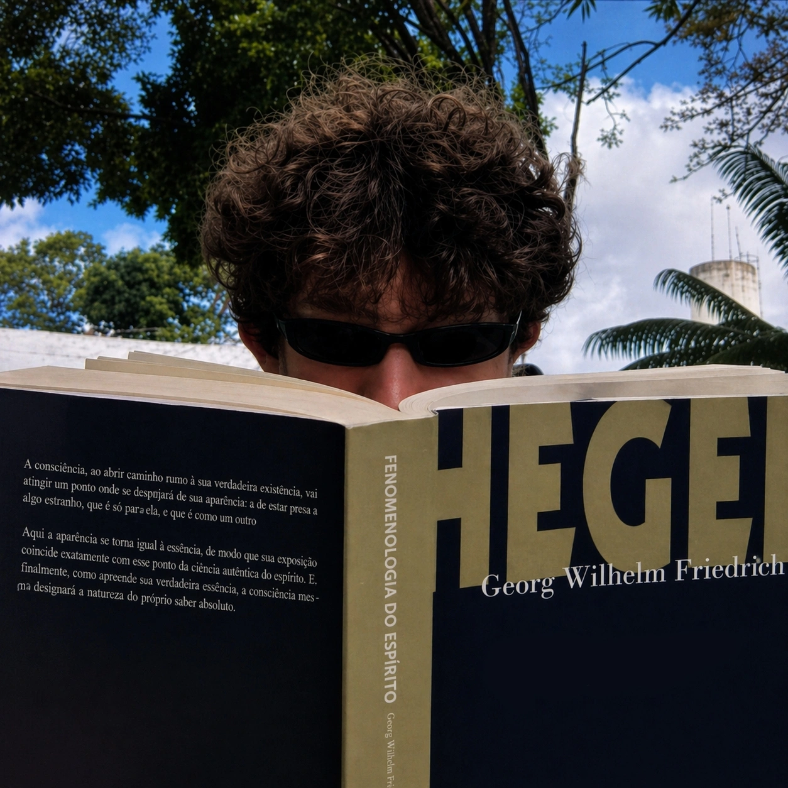

Neste lugar, compartilho pensamentos, experiências e ideias sobre filosofia e afins. Espero que goste do contedo. Boa leitura!
Bem-vindo à Syneidesis!

Quem sou eu?
Meu nome é Adham Goulart e sou um amante de sabedoria, pode-se dizer que sou sobretudo um romântico hegeliano, tenho afinidade e admiração pelo Goethezeit, principalmente pela fase romântica do próprio. Este site é um espaço onde exponho a sensibilidade compartilhando algumas ideias, referências e projetos pessoais, servindo como um meio de guardar e mostrar minha arte estética.
Destaques:
Meus últimos textos:

Frase semanal
"A humanidade me dá tudo, mas a natureza me dá tudo que a humanidade me rouba"